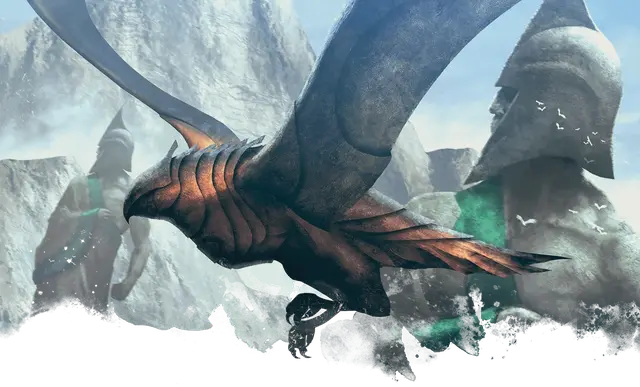

Кованая птица
Anvilwrought Raptor
Крошечный Конструкт, без мировоззрения

Класс Доспеха 14 (природный доспех)
Хиты 18 (4к4 + 8)
Скорость 10 футов, летая 60 футов
| мод | спас | ||
|---|---|---|---|
| СИЛ | 12 | +1 | +1 |
| ЛОВ | 16 | +3 | +3 |
| ТЕЛ | 14 | +2 | +2 |
| мод | спас | ||
|---|---|---|---|
| ИНТ | 3 | −4 | −4 |
| МДР | 14 | +2 | +2 |
| ХАР | 1 | −5 | −5 |
Навыки Восприятие +4
Иммунитет к урону огонь, яд
Иммунитет к состояниям истощение, окаменение, отравление, очарование, паралич
Чувства тёмное зрение 120 футов, пассивное Восприятие 14
Языки понимает один язык своего создателя, но не говорит
Опасность 1/2 (100 опыта)
Бонус мастерства +2
Особенности
Острое зрение. Кованая птица совершает с преимуществом проверки Мудрости (Восприятие), полагающиеся на зрение.
Записанная имитация. Кованая птица может имитировать любой звук, включая голоса, которые она слышала за последние 24 часа.Существо, слышащее эти звуки, может понять, что это подражание, если совершит успешную проверку Мудрости (Проницательность) Сл 12.
Кованая птица – ФАМИЛЬЯР. Некоторые кованые птицы были созданы специально для того, чтобы быть фамильярами. У данных птиц есть следующая особенность.
Фамильяр. Кованая птица может служить другим существам фамильяром, формируя телепатическую связь со своим хозяином. Пока двое связаны, хозяин может почувствовать то, что чувствует птица, если они находятся не далее 1 мили друг от друга.
Действия
Мультиатака. Кованая птица совершает две атаки Клювом.
Клюв. . Рукопашная атака оружием: +5 к попаданию, досягаемость 5 футов, одна цель. Попадание: 5 (1к4 + 3) колющего урона.
Описание
Высоко ценимые среди тавматургов Мелетиды, кованые птицы часто изготавливаются в форме ястреба или совы. Большинство из них служат посыльными и шпионами, летая над оживленными улицами или высоко над землей, неся или ища жизненно важную информацию для своих хозяев.
Кованые
Первые кованые были созданы богом кузницы Пирфором. Он передал секрет вдыхания жизни в этих металлических существ своим самым преданным последователям, чтобы они могли подражать его работам и изобретать новые формы в своих собственных кузницах.
Некоторые кованые являются бдительными стражами святых мест, другие служат фамильярами и посланниками, а некоторые были созданы, чтобы подражать красоте, свойственной животным мира смертных. Каждый проявляет особенности, соответствующие его роли, а некоторые ведут себя как дружелюбные существа или стоические стражи.
Несколько чрезвычайно редких и ценных кованых были изготовлены рукой самого Пирфора. Некоторые из этих великолепных творений теперь являются семейными реликвиями монархов; другие затеряны в песках времени или охраняются древними монстрами.